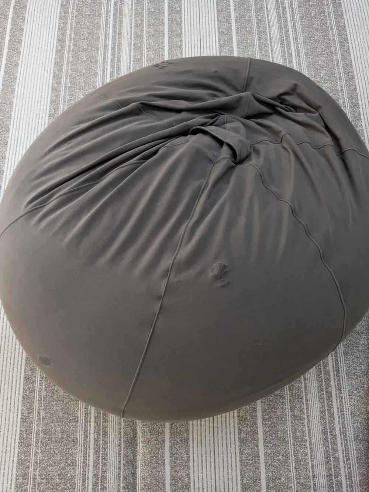
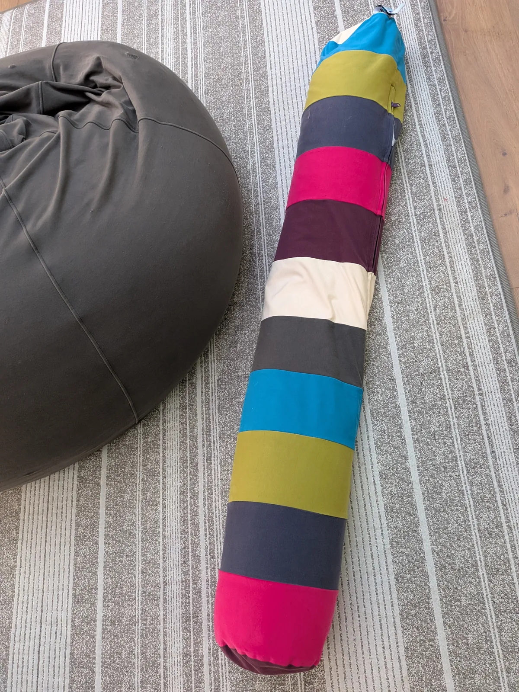

※本記事にはプロモーション（PR）が含まれています。
Yogiboを4人家族で4年使ったリアルなレビュー｜ヘタってきたけど今も毎日の定位置
40代夫婦と6歳・2歳の子どもの4人家族で、Yogibo（丸いタイプ）とロングクッションを約4年使っています。どちらももらい物です。かなりヘタってきましたが、今もよく使っています。そんなわが家のYogiboのリアルを、正直に書きます。

わが家のYogibo
わが家にあるのは、グレーの丸いYogiboと、ストライプ柄の長いクッションの2つです。タグには「Yogibo」とだけ書かれていて、商品名はタグに書いておらずわかりません。この記事では「Yogibo（丸いタイプ）とロングクッション」と書きますね。


使い方
子どもたちは飛び込んで遊んでいます。家族みんな、ソファのように座ってテレビを見たり、スマホを使ったりしています。
4年使って硬さはどう変わったか
最初はとても硬かったのですが、使ううちにだんだんフニャフニャになってきました。でも、そのやわらかさも、ある意味気持ちいいです。
汚れたらカバーだけ洗う
汚れたときは、カバーだけを洗って乾太くんで乾かしています。洗って乾かすと、少しだけ張りが戻ります。正直に言うと、カバーにはシミもあります。
※カバーの洗い方や乾燥機の使用可否は、商品の表示を確認してください。
よかったところ
- 好きな場所に動かして、どこでも座れる
- いろいろな座り方ができる
気になるところ
- だんだんやわらかくなって、ヘタってくる
補充ビーズについて
妻と「補充用のビーズを買おうか」と話していますが、まだ買っていません。いいタイミングで補充するかもしれません。
Yogibo 補充用ビーズ
リンク準備中
こんな家族におすすめ
子どもがいて、リビングで自由にくつろぎたい家族に合うと思います。
Yogibo 本体
リンク準備中
Yogibo ロングクッション
リンク準備中
Yogibo 補充用ビーズ
リンク準備中